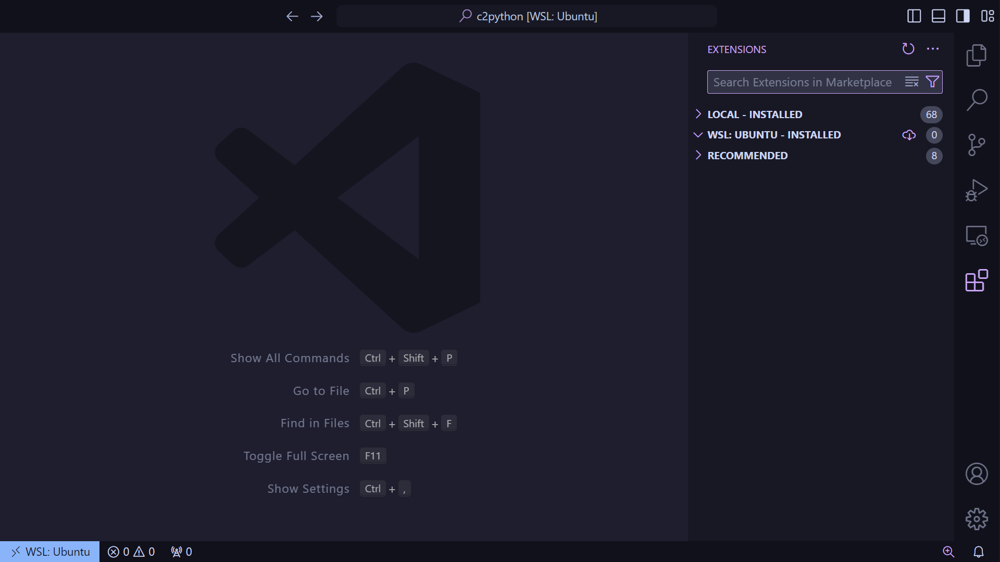
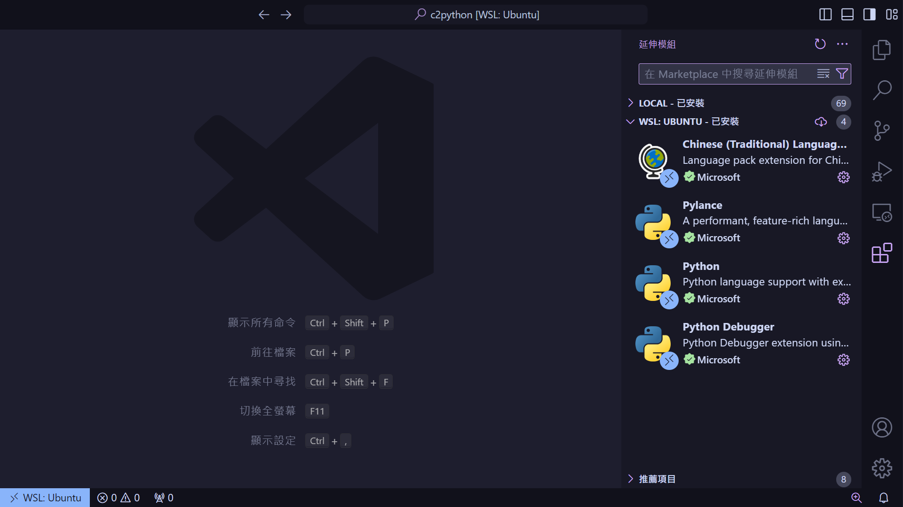

事前準備
這次 Python 的課程會有大量的實作讓各位練習，會需要設定電腦的環境
- Python 環境安裝
- VS Code
建立課程目錄
為了避免和其他的目錄衝突，這次課程會需要獨立出來一個目錄。
$ cd ~ # 回到使用者家目錄
$ mkdir c2python # 建立 c2python 目錄
$ cd ./c2python # 切換進入目錄Python 環境安裝
Python 的環境可以到 Python 官網 安裝對應作業系統的 Python 安裝檔。安裝完畢後，在終端機打開 Python 的直譯器，若正常運行即代表安裝成功。
$ pythonPython 3.10.12 (main, Nov 20 2023, 15:14:05) [GCC 11.4.0] on linux
Type "help", "copyright", "credits" or "license" for more information.
>>>VS Code 環境安裝
到 VS Code 官網 選擇合適的作業系統版本安裝。安裝完畢後，打開終端機。
$ code接著打開插件（Extensions）頁面
我們這次一共要安裝一些插件來輔助我們寫扣。
所有插件安裝完後大概會長這樣。
課程簡報與程式碼
這次社課所有的檔案都放在 yuto0226/FromC2Python，我們一樣把它 clone 到家目錄。
$ cd ~
$ git clone https://github.com/yuto0226/FromC2Python.git都完成後我們的環境就都設定好了喔～